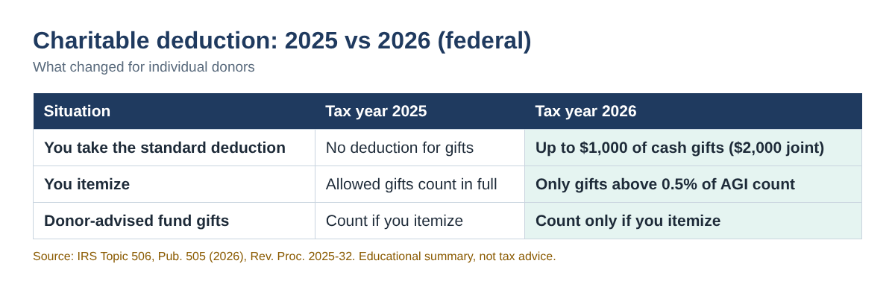
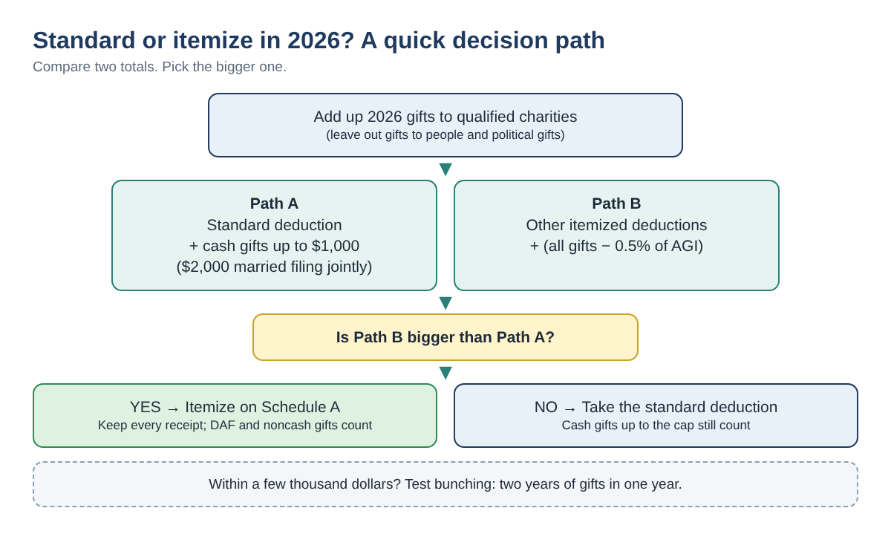
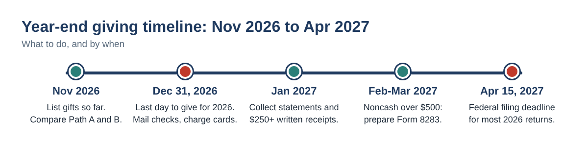

2026 Charitable Deduction Rules: Will Your Donations Lower Your Taxes? (Standard vs. Itemized, Step by Step)
For years, most people who gave to their church, food bank or school got no tax benefit at all, because they took the standard deduction. Starting with tax year 2026, that changes. Non-itemizers can now deduct some cash gifts, while itemizers face a new floor that removes part of their deduction.
If you run a small business, you probably think about deductions all year. Your personal giving deserves the same five minutes before December 31. This guide walks you through the 2026 rules, two simple calculations you can do on paper or in a spreadsheet, and the receipts the IRS expects.
Who this is for: individuals and small business owners who give to charity and want to know, before year-end, whether their 2026 gifts will reduce their federal income tax.
What changed for 2026
Three rules matter for most donors. All figures below are federal and come from IRS guidance (sources at the end).
- Non-itemizers: you may deduct up to $1,000 of cash or check gifts to qualified charities ($2,000 if married filing jointly), added on top of the standard deduction. Donor-advised fund gifts generally do not qualify.
- Itemizers: you can only deduct charitable gifts that are more than 0.5% of your AGI. With AGI of $150,000, the first $750 of gifts does not count.
- Very high incomes: itemized deductions may be reduced when taxable income is above $640,600 ($768,700 married filing jointly). This post does not model that rule.

The 2026 standard deduction is $16,100 for single filers and married filing separately, $32,200 for married filing jointly and $24,150 for head of household. People who are 65 or older or blind add $1,650 each if married, or $2,050 if unmarried.
Step by step: will your gifts lower your tax?
You are comparing two totals. Whichever is bigger is the deduction you take.
- Add up your 2026 gifts by type. Cash, check or card gifts to charities; gifts to a donor-advised fund (DAF); and noncash items such as clothing or furniture. Leave out gifts to individuals, crowdfunding for a person and political gifts. They are not deductible.
- Subtract anything you received. If a $300 gala ticket included a $120 dinner, only $180 is a gift.
- Path A (standard): standard deduction + the smaller of your cash gifts or the cap ($1,000, or $2,000 joint). DAF and noncash gifts do not count here.
- Path B (itemize): your other itemized deductions (state and local taxes up to the $40,400 cap, mortgage interest and so on) + all gifts − 0.5% of AGI.
- Pick the bigger path. The extra deduction from your gifts is the bigger path minus whatever you would get with no gifts at all.

Three worked examples (example values)
| Example | Path A: standard | Path B: itemize | Result |
|---|---|---|---|
| A. Single, AGI $60,000, other itemized $6,000, cash gifts $1,500 | $16,100 + $1,000 = $17,100 | $6,000 + ($1,500 − $300) = $7,200 | Standard. Gifts add $1,000. |
| B. Married jointly, AGI $180,000, other itemized $30,000, cash gifts $8,000 | $32,200 + $2,000 = $34,200 | $30,000 + ($8,000 − $900) = $37,100 | Itemize. Gifts add $4,900. |
| C. Head of household, AGI $95,000, other itemized $12,000, cash $2,000 + DAF $1,000 | $24,150 + $1,000 = $25,150 | $12,000 + ($3,000 − $475) = $14,525 | Standard. The DAF gift adds nothing. |
Example values only. Extra deduction = bigger path − larger of the standard deduction or other itemized deductions.
Notice example C. The $1,000 donor-advised fund gift helps only if you itemize, so for this family it adds nothing in 2026. Giving that money directly to a charity in cash would have counted, up to the $1,000 cap.
Type the formulas yourself
Put your numbers in cells B1 to B5 of any spreadsheet (Excel or Google Sheets), then type these formulas:
| Cell | What it holds | Formula |
|---|---|---|
| B1 | Filing status: single, joint or hoh | (type it) |
| B2 · B3 | AGI · other itemized deductions | (type them) |
| B4 · B5 | Cash gifts · DAF + noncash gifts | (type them) |
| B6 | Standard deduction | =IF(B1="joint",32200,IF(B1="hoh",24150,16100)) |
| B7 | Path A | =B6+MIN(B4,IF(B1="joint",2000,1000)) |
| B8 | Path B | =B3+MAX(0,B4+B5-0.005*B2) |
| B9 | Answer | =IF(B8>B7,"Itemize","Standard") |
Married filing separately uses the single amount here. Remember that if your spouse itemizes on a separate return, you must itemize too.
Close call? Try bunching two years of gifts
If Path B is a little smaller than Path A, giving two years of gifts in one year can push you over. You itemize in the big year and take the standard deduction in the off year.
| Plan (married jointly, AGI $150,000, other itemized $28,000, $6,000 a year) | 2026 | 2027 | 2-year total |
|---|---|---|---|
| Give $6,000 each year | $34,200 | $34,200 | $68,400 |
| Give $12,000 in 2026, nothing in 2027 | $39,250 | $32,200 | $71,450 |
Example values. Assumes 2027 amounts match 2026; the 2027 figures are not yet published.
Here bunching adds $3,050 of deductions over two years. A donor-advised fund can hold the bunched gift and pay charities over time, but remember the DAF gift counts only in a year you itemize.
Receipts and timing the IRS expects
- Any cash gift: keep a bank or card record, or a written note from the charity with its name, the date and the amount.
- A single gift of $250 or more: get a written acknowledgment from the charity before you file. It must say whether you received anything in return.
- Noncash gifts over $500: file Form 8283. An item or group of similar items over $5,000 needs a qualified appraisal.
- Timing: a check counts on the date you mail it; a credit card gift counts when the charge is made, even if you pay the card in January.

Common mistakes
- Counting a crowdfunding gift to a neighbor or family member. Gifts to individuals are not deductible.
- Deducting the full ticket price of a charity dinner or gala instead of the amount above the value you received.
- Assuming a donor-advised fund gift counts toward the new $1,000/$2,000 deduction.
- Forgetting the 0.5% floor when deciding whether itemizing is worth it.
- Waiting for January to ask for $250+ acknowledgments, then filing without them.
- Mailing a check on January 2 and expecting it to count for 2026.
FAQ
Do I need receipts if I take the standard deduction?
Yes. The non-itemizer deduction is still a charitable deduction, so the same recordkeeping rules apply: a bank record or written note for every cash gift, and a written acknowledgment for any single gift of $250 or more.
Do clothing and household donations count if I don't itemize?
No. The new deduction for non-itemizers covers contributions made by cash or check. Noncash gifts help only if you itemize.
Is the 0.5% floor based on my AGI?
Yes. IRS Publication 505 (2026) says itemizers can only deduct charitable contributions that are more than 0.5% of AGI. Multiply your AGI by 0.005 and subtract that amount from your total gifts.
We file jointly. Is the limit $1,000 each?
No. The cap is $2,000 for the joint return, not $2,000 per person on top of each other.
Quick checklist
- ☐ List every 2026 gift with date, charity, type and amount
- ☐ Subtract the value of meals, tickets or gifts you received
- ☐ Compute Path A and Path B; pick the bigger one
- ☐ Close call? Compare bunching two years into one
- ☐ Give by December 31, 2026 (mail checks, charge cards by then)
- ☐ Collect $250+ acknowledgments before you file; Form 8283 for noncash over $500
If you would rather not build the spreadsheet yourself, a ready-made Charitable Donation Deduction Planner 2026 workbook (Excel, English or English + Korean) is available in our Etsy and Gumroad shops.
This article is for education only and is not tax, legal or financial advice. Rules can change; check the final 2026 IRS forms and instructions or ask a qualified tax professional about your situation.
Sources
- IRS Topic No. 506, Charitable contributions
- IRS Publication 505 (2026), Tax Withholding and Estimated Tax
- IRS Publication 526, Charitable Contributions
- IRS Publication 6196, Charitable Contribution Deduction Tips for Non-Itemizers
- IRS Rev. Proc. 2025-32 (Internal Revenue Bulletin 2025-45)
- IRS Tips for tracking charitable donations
- IRS When to file